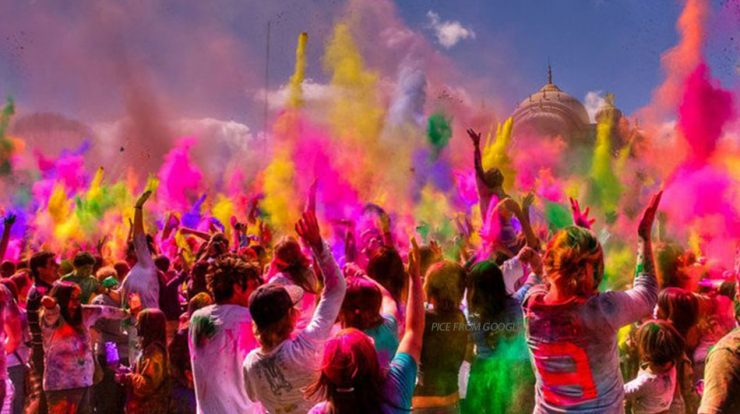

Holi, also known as Festival of Colors, is one of the most popular festivals in Nepal. It takes place on the full moon day in Nepali Fagu month (February to March in Solar Calendar) and lasts for 2 days. This festival was held from March 20 to 21, 2019, and falls on March 9 to 10, 2020. Following Dashain and Tihar Festival, Holi is celebrated for the victory of good over evil and the coming of spring. During this colorful festival, Nepalese and foreign tourists will throw each other with dry powder and colored water to express their sincere blessings and good wishes.

Background of Holi, Nepal Water Festival
The origin of Holi Festival can be traced back to the "Mahabharata", Indian famous epic. According to the legend, King Hiranyakashipu was so arrogant and didn't allow people to worship Lord Vishnu. However, Prince Prahlada was an ardent devotee of Vishnu and openly opposed his father. This enraged Hiranyakashipu. Since then, the king ordered his sister Holika to burn the prince on the full moon night. Under the blessing of God Vishnu, Prahlada was unscathed while Holika was burned into ashes. When the prince walked out of the fire, people sprinkled him with colorful water to express the praise of goodness and hatred of evil.
raditions of Nepal Holi Festival
Different from India Holi rituals, Holi Festival in Nepal has a special ceremony for erecting a wood pole. On this day, Nepali women dress in beautiful Sari with auspicious things in hand, and then circle around the pole to pray for the blessings. Durbar Square and the surrounding streets turn into a sea of waters, colors and music. And you'll have the chance to see the most prestigious singers performing on the stage. On the eighth day, the festival comes to an end with Holi bonfire.